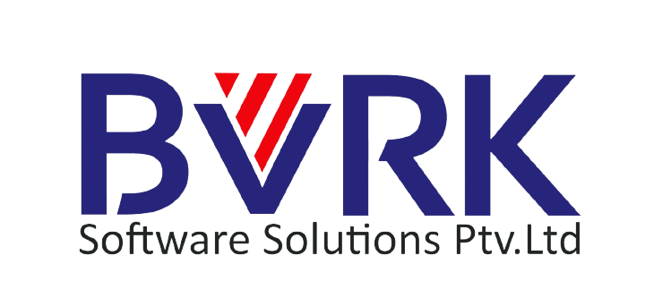

Think big
Your VISION and our efforts can conquer your goal!
Get started
Your VISION and our efforts can conquer your goal!
Get startedCulture and attitude are key ingredients for success. Striving for excellence is a culture that lives in our company. We recognize that our success is a result of Trust and Teamwork, one of our core values. Our intention is to enhance the competitive edge of African business, and provide clients with seasoned resources that are innovative in delivering progressive business continuity.
We are a client-centered and quality-conscious organization that offers a complete portfolio of IT Technology services and solutions. We build lasting relationships with our clients, employees, and partners through open, transparent and honest communications. We earn trust and respect through integrity in all our actions. Our outsourcing experience, our talented programmers, digital marketers, superior collaborative tools, and effective project management, enable collaboration and successfully deliver projects on time.
At Kalam Solutions, we want to be the Africa’s best at helping employers achieve success through quality personnel.
Culture and attitude are key ingredients for success. Striving for excellence is a culture that lives in our company. We recognize that our success is a result of Trust and Teamwork, one of our core values. Our intention is to enhance the competitive edge of African business, and provide clients with seasoned resources that are innovative in delivering progressive business continuity.
We are a client-centered and quality-conscious organization that offers a complete portfolio of IT Technology services and solutions. We build lasting relationships with our clients, employees, and partners through open, transparent and honest communications. We earn trust and respect through integrity in all our actions. Our outsourcing experience, our talented programmers, digital marketers, superior collaborative tools, and effective project management, enable collaboration and successfully deliver projects on time.
At Kalam Solutions, we want to be the Africa’s best at helping employers achieve success through quality personnel.